Code
library(dplyr)
library(tibble)
library(ggplot2)
library(patchwork)
library(akima)
library(purrr)
library(tidyr)
library(data.table)
library(DT)Load libraries:
library(dplyr)
library(tibble)
library(ggplot2)
library(patchwork)
library(akima)
library(purrr)
library(tidyr)
library(data.table)
library(DT)To illustrate the diversity of the Weibull distributions used in our simulation design, we plot both the density f(t) and survival S(t) functions for 10 randomly sampled shape \alpha and scale \sigma parameter pairs. These distributions represent either the true survival, predicted survival, or censoring times across simulations. The wide parameter range induces substantial variability, ensuring a rich family of distributions and increasing the sensitivity of our evaluation to detect violations of properness. By construction, all data-generating mechanisms assume Y independent of C, satisfying the random censoring assumption.
set.seed(0L)
shape = runif(9, 0.5, 5)
scale = runif(9, 0.5, 5)
time_grid = seq(0, 6, 0.1)
params = tibble(
id = seq_along(shape),
shape = shape,
scale = scale,
group = sprintf("(%0.2f, %0.2f)", shape, scale)
)
grid = tidyr::expand_grid(params, t = time_grid)
dw = grid |>
mutate(value = dweibull(t, shape, scale), type = "Density f(t)")
pw = grid |>
mutate(value = pweibull(t, shape, scale, lower.tail = FALSE), type = "Survival S(t)")
plot_df = bind_rows(dw, pw) |>
mutate(type = factor(type, levels = c("Density f(t)", "Survival S(t)")))
ggplot(plot_df, aes(x = t, y = value, color = group, group = group)) +
geom_line(linewidth = 0.8, alpha = 0.9) +
facet_wrap(~ type, ncol = 1, scales = "free_y") +
scale_color_brewer(palette = "Set1") +
scale_x_continuous(breaks = 0:6) +
labs(
x = expression("Time"),
y = NULL,
color = expression("(" * alpha * "," * sigma * ")"),
title = "Weibull Density and Survival Curves"
) +
theme_bw(base_size = 16) +
theme(
legend.position = "right",
strip.text = element_text(face = "bold")
)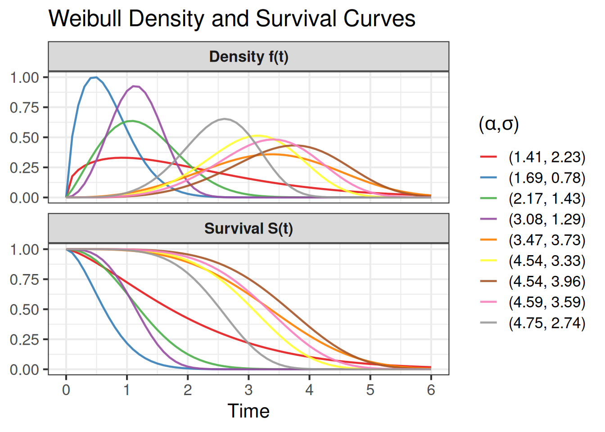
#ggsave("weibull_plots.png", device = png, dpi = 600, width = 8, height = 5)Use properness_test.R to run the experiments.
Example execution: Rscript properness_test.R 10000 1000 10000 FALSE 42.
The above arguments correspond to (in that order): K = 10\,000 simulations, m = 1\,000 distributions per simulation and n = 10\,000 samples drawn from each distribution. FALSE means that S_C(t) is used directly from the true Weibull distribution and not estimated, 42 is just a seed number we used for reproducibility.
To run for different sample sizes n, use run_tests.sh.
Merged simulation results for all sample sizes are available here.
Results from 10 randomly sampled simulations:
res = readRDS("results/res_sims10000_distrs1000_0.rds")
res[sample(1:nrow(res), 10), ] |>
DT::datatable(
rownames = FALSE,
options = list(dom = "t", searching = FALSE, lengthChange = FALSE)
) |>
formatRound(columns = 3:40, digits = c(rep(3,8), rep(5,30)))Each row corresponds to one simulation, and the quantites are averaged across m = 1000 draws from Weibull survival distributions at a fixed sample size n \in \{10, \dots, 10\,000\}.
The output columns are:
sim: simulation index (k in the paper)n: sample sizen_events: number of uncensored events observed in the simulated datasetmax_t: maximum observed follow-up timem_true, m_pred: true and predicted mean survival times from the generating Weibull modelsm_true_est, m_pred_est: estimated mean survival times using the trapezoidal rule on the observed time point supportS_Y_q10, S_Y_med, S_Y_q90: values of the true event-time survival function S_Y(t) evaluated at the 10th percentile, median, and 90th percentile of the observed time points.S_C_q10, S_C_med, S_C_q90: Values of the censoring survival function S_C(t) evaluated at the 10th percentile, median, and 90th percentile of the observed time points.S_Y_tail, S_C_tail: tail survival probability at max_t for event and censoring distributionsepsilon: \hat\varepsilon = \frac{\sum_{d=1}^{1000} \left[S_Y^d(t_{\\max}^d) \times S_C^d(t_{\max}^d)\right]}{1000}{surv|pred|cens|}_{scale|shape} the scale and shape of the Weibull distributions for true, predicted and censoring times respectivelyprop_cens: proportion of censoring in each simulationtv_dist: the total variation distance between the true and the predicted Weibull distribution (closer to 0 means more similar distributions){score}_diff, {score}_sd: the mean and standard deviation of the score difference D between true and predicted distributions across drawsScoring rules analyzed:
We compute 95% confidence intervals (CIs) for the mean score difference \bar{D} (true - predicted) using a t-distribution. A violation is marked statistically significant if:
res = res |>
select(!matches("shape|scale|prop_cens|tv_dist|n_events|max_t|m_true|m_pred"))
measures = c("SBS_q10", "SBS_median", "SBS_q90", "ISBS", "RCLL", "wRCLL")
n_distrs = 1000 # `m` value from paper's experiment
tcrit = qt(0.975, df = n_distrs - 1) # 95% t-test
threshold = 1e-4
data = measures |>
lapply(function(m) {
mean_diff_col = paste0(m, "_diff")
mean_sd_col = paste0(m, "_sd")
res |>
select(sim, n, !!mean_diff_col, !!mean_sd_col, starts_with("shift_"),
epsilon, starts_with("S_")) |>
select(-ends_with("tail")) |>
mutate(
se = .data[[mean_sd_col]] / sqrt(n_distrs),
CI_lower = .data[[mean_diff_col]] - tcrit * se,
CI_upper = .data[[mean_diff_col]] + tcrit * se,
signif_violation = .data[[mean_diff_col]] > threshold & CI_lower > 0,
# Keep relevant SBS columns
shift_q10 = if (m == "SBS_q10") shift_q10 else NA_real_,
S_Y_q10 = if (m == "SBS_q10") S_Y_q10 else NA_real_,
S_C_q10 = if (m == "SBS_q10") S_C_q10 else NA_real_,
shift_med = if (m == "SBS_median") shift_med else NA_real_,
S_Y_med = if (m == "SBS_median") S_Y_med else NA_real_,
S_C_med = if (m == "SBS_median") S_C_med else NA_real_,
shift_q90 = if (m == "SBS_q90") shift_q90 else NA_real_,
S_Y_q90 = if (m == "SBS_q90") S_Y_q90 else NA_real_,
S_C_q90 = if (m == "SBS_q90") S_C_q90 else NA_real_
) |>
select(!se) |>
mutate(metric = !!m) |>
relocate(metric, .after = 1) |>
rename(diff = !!mean_diff_col,
sd = !!mean_sd_col)
}) |>
bind_rows()
data$metric = factor(
data$metric,
levels = measures,
labels = c("SBS (Q10)", "SBS (Median)", "SBS (Q90)", "ISBS", "RCLL", "RCLL*")
)For example, the results for the first simulation and n = 250 across all scoring rules show no violations of properness:
data |>
filter(sim == 1, n == 250) |>
select(-starts_with("shift"), -epsilon, -starts_with("S_")) |>
DT::datatable(
rownames = FALSE,
options = list(dom = "t", searching = FALSE, lengthChange = FALSE)
) |>
formatRound(columns = 4:7, digits = 5)We summarize violations across simulations (sim), by computing for each score & sample size:
all_stats =
data |>
group_by(n, metric) |>
summarize(
n_violations = sum(signif_violation),
violation_rate = mean(signif_violation),
diff_mean = if (any(signif_violation)) mean(diff[signif_violation]) else NA_real_,
diff_median = if (any(signif_violation)) median(diff[signif_violation]) else NA_real_,
diff_min = if (any(signif_violation)) min(diff[signif_violation]) else NA_real_,
diff_max = if (any(signif_violation)) max(diff[signif_violation]) else NA_real_,
.groups = "drop"
)
all_stats |>
arrange(metric) |>
DT::datatable(
rownames = FALSE,
options = list(searching = FALSE),
caption = htmltools::tags$caption(
style = "caption-side: top; text-align: center; font-size:150%",
"Table 1: Empirical violations of properness"
)
) |>
formatRound(columns = 4:8, digits = 5)The theoretical shift (i.e. bias) of the global minimum x^* of the expected SBS from the true survival probability at \tau^* is (for \varepsilon \ge 0):
x^\star - S_Y(\tau^*) = - \frac{\varepsilon (1-S_Y(\tau^*))}{S_C(\tau^*) - \varepsilon} \approx - \varepsilon \cdot \frac{1 - S_Y(\tau^*)}{S_C(\tau^*)}
Filter SBS simulation data for plotting:
plot_data = data |>
filter(grepl("^SBS", metric)) |>
pivot_longer(
cols = starts_with("shift_"),
names_to = "shift_type",
values_to = "shift",
values_drop_na = TRUE # only keep the relevant shift per metric
) |>
mutate(
S_Y = case_when(
metric == "SBS (Q10)" ~ S_Y_q10,
metric == "SBS (Median)" ~ S_Y_med,
metric == "SBS (Q90)" ~ S_Y_q90
),
S_C = case_when(
metric == "SBS (Q10)" ~ S_C_q10,
metric == "SBS (Median)" ~ S_C_med,
metric == "SBS (Q90)" ~ S_C_q90
)
) |>
select(-S_Y_q10, -S_Y_med, -S_Y_q90, -S_C_q10, -S_C_med, -S_C_q90) |>
mutate(
metric = recode(
metric,
"SBS (Q10)" = "SBS (Early, q10)",
"SBS (Median)"= "SBS (Median, q50)",
"SBS (Q90)" = "SBS (Late, q90)"
)
)ann_df = data.frame(
metric = unique(plot_data$metric)[1],
x = 0.01,
y = -0.07,
xend = 0.01,
yend = -0.175,
label = "larger bias\n(improperness)"
)
# shift vs epsilon
set.seed(42)
plot_data |>
slice_sample(prop = 0.2) |> # 20% of: 3 SBS metrics x 10 sample sizes (n) x 10000 simulations per n
ggplot(aes(x = epsilon, y = shift, color = factor(n))) +
geom_point(alpha = 0.5, size = 0.1) +
facet_wrap(~metric, scales = "fixed") +
scale_color_discrete(
name = "Sample size (n)",
) +
scale_x_continuous(
limits = c(0, 0.11),
breaks = c(0, 0.025, 0.05, 0.075, 0.1)
) +
labs(
x = "Tail product estimate ε̂ ", #expression(hat(epsilon) * " "),
y = expression(x^"*" ~ "-" ~ S[Y](tau^ ~ symbol("\052"))), # shift from optimal prediction
color = "Sample size (n)"
) +
theme_bw(base_size = 14, base_family = "Arial") +
#theme(axis.text.x = element_text(angle = 35, hjust = 1)) +
guides(color = guide_legend(override.aes = list(size = 4))) +
geom_hline(yintercept = 0, linetype = "dashed", linewidth = 0.3, color = "black") +
geom_segment(
data = ann_df,
aes(x = x, y = y, xend = xend, yend = yend),
inherit.aes = FALSE,linewidth = 1,
arrow = arrow(length = unit(0.25, "cm"))
) +
geom_text(
data = ann_df,
aes(x = x + 0.02, y = y - 0.05, label = label),
inherit.aes = FALSE,
angle = 90,
size = 6,
fontface = "bold"
)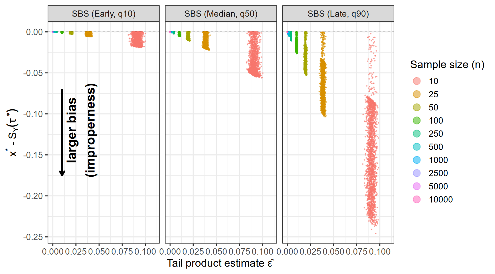
#ggsave(filename = "epsilon_vs_bias.png", dpi = 600, height = 5, width = 10, units = "in")set.seed(42)
plot_data |>
slice_sample(prop = 0.2) |> # 3 SBS metrics x 10 sample sizes (n) x 10000 simulations per n
ggplot(aes(x = S_Y, y = shift, color = factor(n))) +
geom_point(alpha = 0.5, size = 0.3) +
facet_wrap(~metric, scales = "fixed") +
scale_color_discrete(name = "Sample size (n)") +
scale_x_continuous(
limits = c(0, 1),
breaks = c(0, 0.25, 0.5, 0.75, 1)
) +
labs(
x = expression(S[Y](tau^ ~ symbol("\052"))),
y = expression(x^"*" ~ "-" ~ S[Y](tau^ ~ symbol("\052"))),
) +
theme_bw(base_size = 14) +
theme(panel.spacing = unit(1, "lines")) +
guides(color = guide_legend(override.aes = list(size = 4))) +
geom_hline(yintercept = 0, linetype = "dashed", linewidth = 0.3, color = "black") +
geom_segment(
data = ann_df,
aes(x = x, y = y, xend = xend, yend = yend),
inherit.aes = FALSE,linewidth = 1,
arrow = arrow(length = unit(0.25, "cm"))
) +
geom_text(
data = ann_df,
aes(x = x + 0.17, y = y - 0.05, label = label),
inherit.aes = FALSE,
angle = 90,
size = 6,
fontface = "bold"
)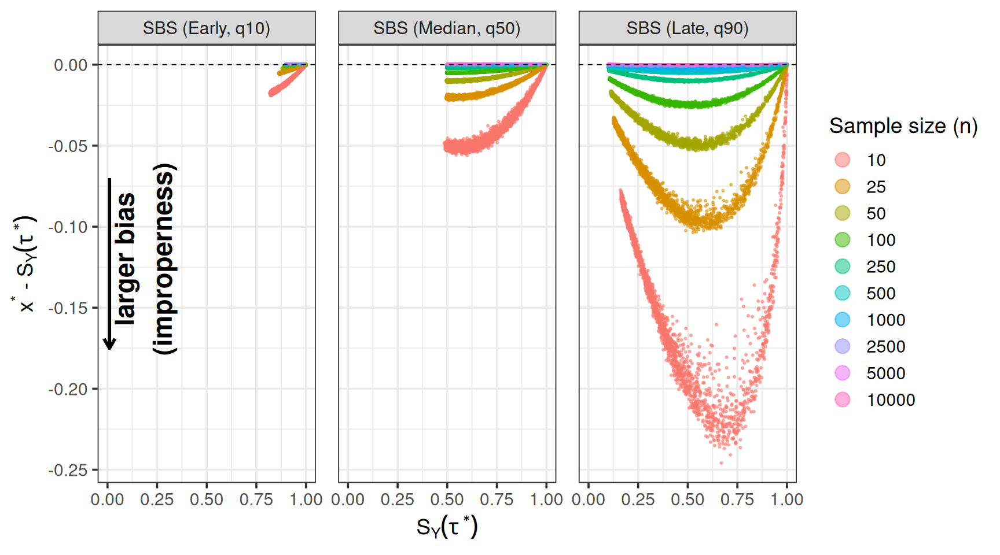
set.seed(42)
plot_data |>
slice_sample(prop = 0.2) |> # 3 SBS metrics x 10 sample sizes (n) x 10000 simulations per n
ggplot(aes(x = S_C, y = shift, color = factor(n))) +
geom_point(alpha = 0.5, size = 0.3) +
facet_wrap(~metric, scales = "fixed") +
scale_color_discrete(name = "Sample size (n)") +
scale_x_continuous(
limits = c(0, 1),
breaks = c(0, 0.25, 0.5, 0.75, 1)
) +
labs(
x = expression(S[C](tau^ ~ symbol("\052"))),
y = expression(x^"*" ~ "-" ~ S[Y](tau^ ~ symbol("\052"))),
) +
theme_bw(base_size = 14) +
theme(panel.spacing = unit(1, "lines")) +
guides(color = guide_legend(override.aes = list(size = 4))) +
geom_hline(yintercept = 0, linetype = "dashed", linewidth = 0.3, color = "black") +
geom_segment(
data = ann_df,
aes(x = x, y = y, xend = xend, yend = yend),
inherit.aes = FALSE,linewidth = 1,
arrow = arrow(length = unit(0.25, "cm"))
) +
geom_text(
data = ann_df,
aes(x = x + 0.17, y = y - 0.05, label = label),
inherit.aes = FALSE,
angle = 90,
size = 6,
fontface = "bold"
)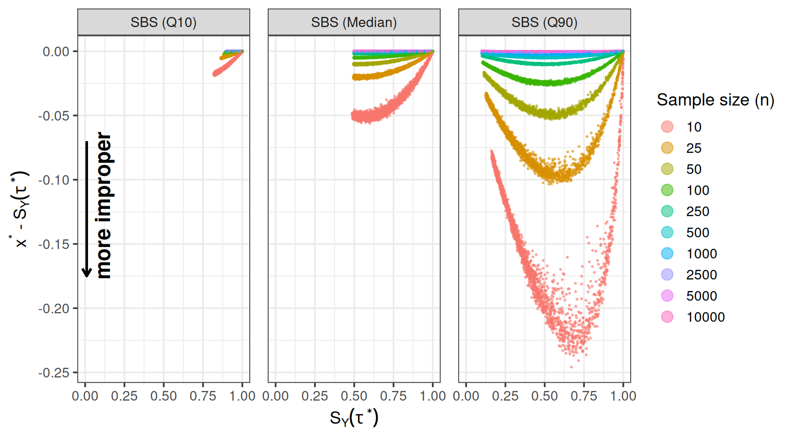
base_data = plot_data |>
dplyr::filter(n == 50)
interp_shift = function(df, nx = 150, ny = 150) {
if (nrow(df) == 0) return(NULL)
interp_res = with(df,
akima::interp(x = S_C, y = S_Y, z = shift, nx = nx, ny = ny, duplicate = "mean")
)
expand.grid(S_C = interp_res$x, S_Y = interp_res$y) |>
mutate(shift = as.vector(interp_res$z),
metric = unique(df$metric))
}
interp_list = base_data |>
dplyr::group_split(metric, .keep = TRUE) |>
purrr::map(.f = interp_shift)
surface_data = bind_rows(interp_list) |>
dplyr::filter(!is.na(shift))
range_shift = range(surface_data$shift, na.rm = TRUE)
min_shift = range_shift[1] # most negative
max_shift = range_shift[2] # closest to zero
ggplot(surface_data, aes(x = S_C, y = S_Y, fill = shift)) +
geom_tile() +
facet_wrap(~ metric) +
scale_fill_gradientn(
colours = c("#B2182B", "grey80", "#2166AC"),
values = scales::rescale(c(min_shift, (min_shift + max_shift)/2, max_shift)),
limits = c(min_shift, 0), # Extend upper limit to 0
name = expression(x^"*" ~ "-" ~ S[Y](tau^ ~ symbol("\052")))
) +
labs(
x = expression(S[C](tau^ ~ symbol("\052"))),
y = expression(S[Y](tau^ ~ symbol("\052")))
) +
theme_bw(base_size = 14) +
theme(panel.spacing = unit(1, "lines"))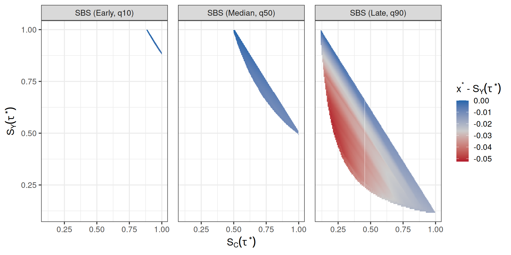
#ggsave(filename = "bias_surface_n50.png", dpi = 600, height = 5, width = 10, units = "in")base_data2 = plot_data |>
dplyr::filter(n == 100)
interp_list2 = base_data2 |>
dplyr::group_split(metric, .keep = TRUE) |>
purrr::map(.f = interp_shift)
surface_data2 = bind_rows(interp_list2) |>
dplyr::filter(!is.na(shift))
range_shift2 = range(surface_data2$shift, na.rm = TRUE)
min_shift = range_shift2[1] # most negative
max_shift = range_shift2[2] # closest to zero
ggplot(surface_data2, aes(x = S_C, y = S_Y, fill = shift)) +
geom_tile() +
facet_wrap(~ metric) +
scale_fill_gradientn(
colours = c("#B2182B", "grey80", "#2166AC"),
values = scales::rescale(c(min_shift, (min_shift + max_shift)/2, max_shift)),
limits = c(min_shift, 0), # Extend upper limit to 0
name = expression(x^"*" ~ "-" ~ S[Y](tau^ ~ symbol("\052")))
) +
labs(
x = expression(S[C](tau^ ~ symbol("\052"))),
y = expression(S[Y](tau^ ~ symbol("\052")))
) +
theme_bw(base_size = 14) +
theme(panel.spacing = unit(1, "lines"))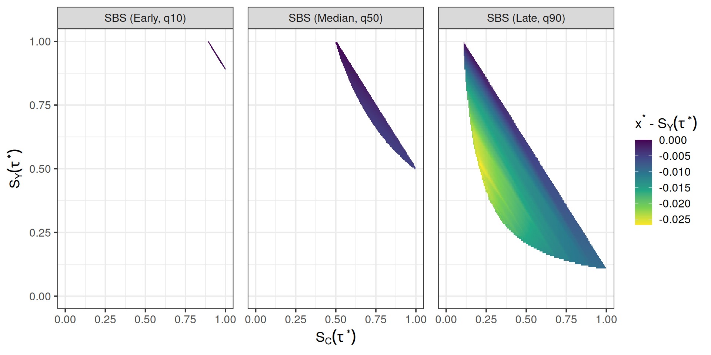
#ggsave(filename = "bias_surface_n100.png", dpi = 600, height = 5, width = 10, units = "in")plot_data |>
group_by(n) |>
summarise(
mean_hat_epsilon = mean(epsilon)
) |>
DT::datatable(
rownames = FALSE,
width = "52%",
options = list(dom = "t", searching = FALSE, lengthChange = FALSE),
caption = htmltools::tags$caption(
style = "caption-side: top; text-align: center; font-size:150%",
"Empirical tail product estimate vs sample size"
)
) |>
formatRound(columns = 2, digits = 4)Here we investigate the impact of administritive censoring on SBS properness. Administritive censoring is applied at the 80% percentile of true event times. SBS is calculated at the 10th, 50th and 90th percentile of observed times (after application of the administrative censoring).
Use properness_test_admin_cens.R to run the experiment.
Execute: Rscript properness_test_admin_cens.R 10000 1000 10000 FALSE 42 to run for n = 10000.
Simulation results are available here.
res = readRDS("results/res_sims10000_distrs1000_n10000_0_admin_cens.rds") |>
select(!matches("shape|scale|prop_cens|tv_dist|n_events|max_t|m_true|m_pred"))
measures = c("SBS_q10", "SBS_median", "SBS_q90", "ISBS")
n_distrs = 1000 # `m` value from paper's experiment
tcrit = qt(0.975, df = n_distrs - 1) # 95% t-test
threshold = 1e-4
data = measures |>
lapply(function(m) {
mean_diff_col = paste0(m, "_diff")
mean_sd_col = paste0(m, "_sd")
res |>
select(sim, n, !!mean_diff_col, !!mean_sd_col, starts_with("shift_"),
epsilon, starts_with("S_")) |>
select(-ends_with("tail")) |>
mutate(
se = .data[[mean_sd_col]] / sqrt(n_distrs),
CI_lower = .data[[mean_diff_col]] - tcrit * se,
CI_upper = .data[[mean_diff_col]] + tcrit * se,
signif_violation = .data[[mean_diff_col]] > threshold & CI_lower > 0,
# Keep relevant SBS columns
shift_q10 = if (m == "SBS_q10") shift_q10 else NA_real_,
S_Y_q10 = if (m == "SBS_q10") S_Y_q10 else NA_real_,
S_C_q10 = if (m == "SBS_q10") S_C_q10 else NA_real_,
shift_med = if (m == "SBS_median") shift_med else NA_real_,
S_Y_med = if (m == "SBS_median") S_Y_med else NA_real_,
S_C_med = if (m == "SBS_median") S_C_med else NA_real_,
shift_q90 = if (m == "SBS_q90") shift_q90 else NA_real_,
S_Y_q90 = if (m == "SBS_q90") S_Y_q90 else NA_real_,
S_C_q90 = if (m == "SBS_q90") S_C_q90 else NA_real_
) |>
select(!se) |>
mutate(metric = !!m) |>
relocate(metric, .after = 1) |>
rename(diff = !!mean_diff_col,
sd = !!mean_sd_col)
}) |>
bind_rows()
data$metric = factor(
data$metric,
levels = measures,
labels = c("SBS (Early, q10)", "SBS (Median, q50)", "SBS (Late, q90)", "ISBS")
)
admin_all_stats =
data |>
group_by(n, metric) |>
summarize(
n_violations = sum(signif_violation),
violation_rate = mean(signif_violation),
mean_hat_epsilon = mean(epsilon),
diff_mean = if (any(signif_violation)) mean(diff[signif_violation]) else NA_real_,
diff_median = if (any(signif_violation)) median(diff[signif_violation]) else NA_real_,
diff_min = if (any(signif_violation)) min(diff[signif_violation]) else NA_real_,
diff_max = if (any(signif_violation)) max(diff[signif_violation]) else NA_real_,
.groups = "drop"
)
admin_all_stats |>
arrange(metric) |>
DT::datatable(
rownames = FALSE,
options = list(dom = "t", searching = FALSE),
caption = htmltools::tags$caption(
style = "caption-side: top; text-align: center; font-size:142%",
"SBS: Empirical violations of properness for large sample size + administrative censoring")
) |>
formatRound(columns = 4:9, digits = 5)The only difference with the previous experiment is that S_C(t) is now being estimated using the marginal Kaplan-Meier model via survival::survfit() instead of using the true Weibull censoring distribution (see helper.R). For SBS/ISBS we use constant interpolation of the censoring survival distribution S_C(t). For RCLL* we use linear interpolation of S_C(t) to mitigate density estimation issues, i.e. for f_C(t).
Use properness_test.R to run the experiments. To run for different sample sizes n, use run_tests.sh, changing estimate_cens to TRUE. Merged simulation results for all n are available here.
Load results (same output columns as in the previous section):
res = readRDS("results/res_sims10000_distrs1000_1.rds") |>
select(!matches("shape|scale|prop_cens|tv_dist|n_events|max_t|m_true|m_pred")) # remove columnsAs before, we compute 95% confidence intervals for the score differences across m = 1000 draws per simulation:
measures = c("SBS_q10", "SBS_median", "SBS_q90", "ISBS", "RCLL", "wRCLL")
n_distrs = 1000 # `m` value from paper's experiment
tcrit = qt(0.975, df = n_distrs - 1) # 95% t-test
threshold = 1e-4
data = measures |>
lapply(function(m) {
mean_diff_col = paste0(m, "_diff")
mean_sd_col = paste0(m, "_sd")
res |>
select(sim, n, !!mean_diff_col, !!mean_sd_col, starts_with("shift_"),
epsilon, starts_with("S_")) |>
select(-ends_with("tail")) |>
mutate(
se = .data[[mean_sd_col]] / sqrt(n_distrs),
CI_lower = .data[[mean_diff_col]] - tcrit * se,
CI_upper = .data[[mean_diff_col]] + tcrit * se,
signif_violation = .data[[mean_diff_col]] > threshold & CI_lower > 0,
# Keep relevant SBS columns, just in case
shift_q10 = if (m == "SBS_q10") shift_q10 else NA_real_,
S_Y_q10 = if (m == "SBS_q10") S_Y_q10 else NA_real_,
S_C_q10 = if (m == "SBS_q10") S_C_q10 else NA_real_,
shift_med = if (m == "SBS_median") shift_med else NA_real_,
S_Y_med = if (m == "SBS_median") S_Y_med else NA_real_,
S_C_med = if (m == "SBS_median") S_C_med else NA_real_,
shift_q90 = if (m == "SBS_q90") shift_q90 else NA_real_,
S_Y_q90 = if (m == "SBS_q90") S_Y_q90 else NA_real_,
S_C_q90 = if (m == "SBS_q90") S_C_q90 else NA_real_
) |>
select(!se) |>
mutate(metric = !!m) |>
relocate(metric, .after = 1) |>
rename(diff = !!mean_diff_col,
sd = !!mean_sd_col)
}) |>
bind_rows()
data$metric = factor(
data$metric,
levels = measures,
labels = c("SBS (Q10)", "SBS (Median)", "SBS (Q90)", "ISBS", "RCLL", "RCLL*")
)Lastly, we summarize the significant violations across sample sizes and scoring rules:
all_stats =
data |>
group_by(n, metric) |>
summarize(
n_violations = sum(signif_violation),
violation_rate = mean(signif_violation),
diff_mean = if (any(signif_violation)) mean(diff[signif_violation]) else NA_real_,
diff_median = if (any(signif_violation)) median(diff[signif_violation]) else NA_real_,
diff_min = if (any(signif_violation)) min(diff[signif_violation]) else NA_real_,
diff_max = if (any(signif_violation)) max(diff[signif_violation]) else NA_real_,
.groups = "drop"
)
all_stats |>
arrange(metric) |>
DT::datatable(
rownames = FALSE,
options = list(searching = FALSE),
caption = htmltools::tags$caption(
style = "caption-side: top; text-align: center; font-size:150%",
"Table C1: Empirical violations of properness using G(t)")
) |>
DT::formatRound(columns = 4:8, digits = 5)Estimating S_C(t) via Kaplan-Meier produced nearly identical results to using the true censoring distribution, with no violations for RCLL/RCLL* and only small-sample effects for SBS and ISBS.
To evaluate how effectively each scoring rule discriminates between increasingly misspecified models, we designed a simulation study based on a non-proportional hazards data-generating process (DGP). The DGP is a log-normal accelerated failure time (AFT) model with covariate-dependent location and group-specific scale, inducing crossing survival curves. For more information about the DGP, generated tasks, models and benchmark details, please see the manuscript.
The simulation and benchmarking pipeline is implemented in the simulation_benchmark directory. Key scripts include:
trained_low.rds, trained_high.rds, and separate files for the large Random Survival Forest objects (trained_low_rsf.rds, trained_high_rsf.rds).results/sim_bm_dense.rds.results/rcll_sim.rds.The following code produces Kaplan–Meier curves for both tasks with additional summary statistics, stratified by the binary treatment variable. See Figure 4 in the paper.
tasks = readRDS("simulation_benchmark/tasks.rds")
plot_km_task = function(task, title, show_censor = FALSE, extend_to_last_time = TRUE) {
d = task$data()
# summary quantities
cens_total = mean(d$status == 0)
cens_x20 = mean(d$status == 0 & d$x2 == 0)
cens_x21 = mean(d$status == 0 & d$x2 == 1)
n_events = sum(d$status == 1)
admin_cens = mean(d$time == 10)
subtitle =
paste0(
sprintf("Total censoring: %.1f%% (x2 = 0: %.1f%%, x2 = 1: %.1f%%)\n",
100 * cens_total, 100 * cens_x20, 100 * cens_x21
),
sprintf("Number of events: %d\n", n_events),
sprintf("Administrative censoring: %.1f%%", 100*admin_cens)
)
# Kaplan-Meier fit
fit = survival::survfit(
survival::Surv(time, status) ~ factor(x2),
data = d
)
s = summary(fit)
df = data.frame(
time = s$time,
surv = s$surv,
lower = s$lower,
upper = s$upper,
strata = s$strata,
n_censor = s$n.censor
)
# ensure S(0) = 1 for each strata
by_strata = split(df, df$strata)
s0_rows = lapply(by_strata, function(dd) {
if (any(dd$time == 0)) {
NULL
} else {
data.frame(
time = 0,
surv = 1,
lower = 1,
upper = 1,
strata = dd$strata[1],
n_censor = 0
)
}
})
s0_rows = do.call(rbind, s0_rows)
if (!is.null(s0_rows)) {
df = rbind(s0_rows, df)
}
if (extend_to_last_time) {
max_time = max(d$time)
by_strata = split(df, df$strata)
ext = lapply(by_strata, function(dd) {
last_row = dd[nrow(dd), , drop = FALSE]
if (max_time > last_row$time) {
last_row$time = max_time
last_row
} else {
NULL
}
})
ext = do.call(rbind, ext)
if (!is.null(ext)) {
df = rbind(df, ext)
}
}
censor_df = df[df$n_censor > 0, , drop = FALSE]
p =
ggplot(df, aes(x = time, y = surv, color = strata, linetype = strata)) +
geom_ribbon(
aes(ymin = lower, ymax = upper, group = strata),
fill = "grey80",
alpha = 0.4,
color = NA
) +
geom_step() +
scale_color_manual(
values = c("black", "red"),
labels = c(
expression(x[2] == 0 ~ paste("(", sigma, " = ", 0.5, ")")),
expression(x[2] == 1 ~ paste("(", sigma, " = ", 1.5, ")"))
)
) +
scale_linetype_manual(
values = c(1, 1),
labels = c(
expression(x[2] == 0 ~ paste("(", sigma, " = ", 0.5, ")")),
expression(x[2] == 1 ~ paste("(", sigma, " = ", 1.5, ")"))
)
) +
labs(
title = title,
subtitle = subtitle,
x = "Time",
y = "Survival probability",
color = NULL,
linetype = NULL
) +
theme_bw(base_size = 14) +
theme(
legend.position = c(0.98, 0.98),
legend.justification = c(1, 1),
legend.background = element_rect(fill = "white", color = "grey80"),
legend.text = element_text(size = 16),
legend.title = element_text(size = 16),
legend.key.size = grid::unit(1, "lines")
)
if (show_censor && nrow(censor_df) > 0) {
p = p + geom_point(
data = censor_df,
aes(x = time, y = surv, color = strata),
shape = 3,
stroke = 0.9,
size = 2,
show.legend = FALSE
)
}
p
}p_low = plot_km_task(tasks$low, title = "Low censoring task", show_censor = TRUE)
p_low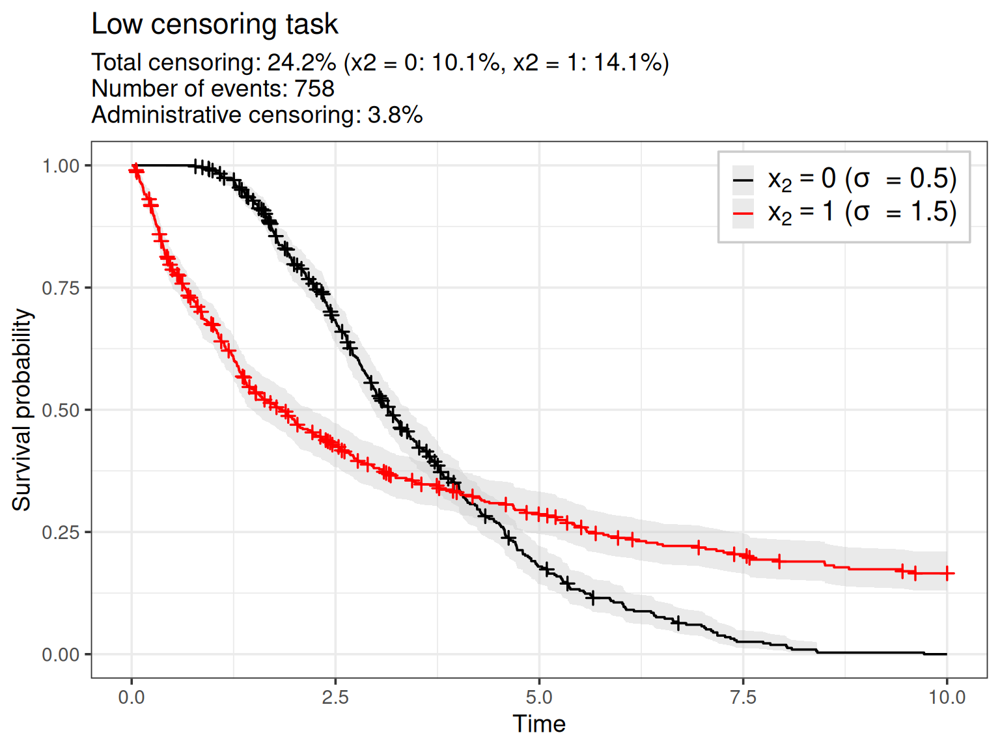
p_high = plot_km_task(tasks$high, title = "High censoring task", show_censor = TRUE)
p_high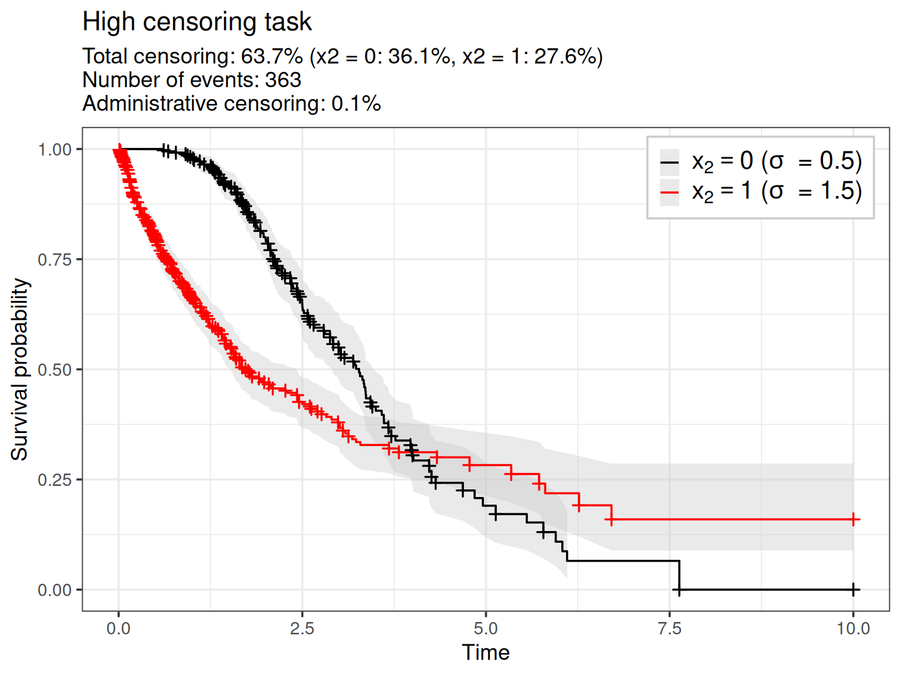
We now evaluate how effectively each scoring rule discriminates between correctly specified and increasingly misspecified models under a large test set. For each task, we generate 100 Monte Carlo resamplings (test sets) of size n = 1000. For each replicate, we compute the excess loss, i.e. the difference in empirical loss between a candidate model and the true data-generating process, i.e. \Delta L = L(\hat S) - L(S_Y), and plot it against the mean integrated absolute error (MIAE) between the predicted and true survival functions (which is a measure of misspecification).
The panels below panels corresponding to three scoring rules (left to right):
res = readRDS("results/sim_bm_dense.rds")
# Plot score differences vs. MIAE/MISE for multiple measures and one test size value
# Score diffs are (predicted - true)
plot_score_diff = function(
res,
y = "miae", # "mise" or "miae"
task_id_val = "low", # "low" or "high"
n_test_val = 1000, # test set size to display
drop_learners = c("CoxPH"), # remove undesired learners
rcll_truth = "interp", # "true" => (true S, true f), "interp" => (true S, interpolated f from linear S)
meas = c("rcll", "cindex", "sbs", "isbs"), # measures to display
legend_position = "right" # "right", "left", "top", "bottom", "none"
) {
# Subset to the chosen task
dt = res[task_id == task_id_val & n_test == n_test_val]
# Remove unwanted learners
dt = dt[!learner_id %in% drop_learners]
# Rename learner_ids
label_map = c(
"LogNorm_int_shape_x2" = "Oracle",
"LogLog_int_shape_x2" = "LLogis",
"Weib_int_shape_x2" = "Weibull",
"LogNorm_noint_shape_x2" = "LogNorm_scale",
"LogNorm_int_noshape" = "LogNorm_int",
"LogNorm_noint_noshape" = "LogNorm",
"CoxPH_int" = "Cox_int",
"RSF" = "RSF",
"KM" = "KM"
)
dt[, learner_id := ifelse(
learner_id %in% names(label_map),
label_map[learner_id],
learner_id
)]
# --- Extract true model references per replicate ---
true_dt = dt[learner_id == "true",
.(rsmp_id,
rcll_true_full = true_rcll,
rcll_true_interp = rcll,
true_cindex = cindex,
true_sbs = sbs,
true_isbs = isbs)]
dt = merge(dt, true_dt, by = "rsmp_id")
# --- Compute differences ---
# RCLL: compare to either full true Likelihood or f interpolated from linear S
if (rcll_truth == "interp") {
dt[, diff_rcll := rcll - rcll_true_interp]
} else if (rcll_truth == "true") {
# comparing with the true model's RCLL, makes the rest of the
# metric comparisons a bit less comparable (as we don't have the true ISBS or SBS)
dt[, diff_rcll := rcll - rcll_true_full]
}
# C‑index: error = 1 - cindex
# error_pred - error_true = (1 - cindex_pred) - (1 - cindex_true) = cindex_true - cindex_pred
dt[, diff_cindex := true_cindex - cindex]
# Brier score
dt[, diff_sbs := sbs - true_sbs]
# Integrated Brier score
dt[, diff_isbs := isbs - true_isbs]
# Remove true model
dt = dt[learner_id != "true"]
# --- Reshape to long format ---
measures = c("rcll", "cindex", "sbs", "isbs")
measures = intersect(measures, meas)
long_dt = melt(dt,
id.vars = c("learner_id", "mise", "miae", "rsmp_id"),
measure.vars = paste0("diff_", measures),
variable.name = "measure",
value.name = "diff")
long_dt[, measure := sub("diff_", "", measure)]
# Learner colours
cols = c(
Oracle = "#dfce0cff",
LogNorm_scale = "#2171B5",
LogNorm_int = "#6BAED6",
LogNorm = "#C6DBEF",
LLogis = "#FFA500",
Weibull = "#756BB1",
Cox_int = "#238B45",
RSF = "#D62728",
KM = "#7F7F7F"
)
# Keep only colours that appear in the data
present_learners = unique(long_dt$learner_id)
cols = cols[names(cols) %in% present_learners]
# Label measures nicely
measure_labels = c(
rcll = if (rcll_truth == "interp") "RCLL" else "RCLL (difference to true likelihood)",
sbs = "SBS (t = 5)",
isbs = "ISBS (τ* = q90)",
cindex = "1 − C‑index (error)"
)
measure_labels = measure_labels[names(measure_labels) %in% measures]
long_dt[, measure_label := factor(measure,
levels = names(measure_labels),
labels = measure_labels)]
# Order learners for the legend
learner_order = c(
"Oracle",
"LLogis",
"Weibull",
"LogNorm_scale",
"LogNorm_int",
"LogNorm",
"Cox_int",
"RSF",
"KM"
)
learner_order = learner_order[learner_order %in% present_learners]
long_dt[, learner_id := factor(learner_id, levels = learner_order)]
# Create the plot
ggplot(long_dt, aes(x = .data[[y]], y = diff, color = learner_id)) +
geom_hline(yintercept = 0, linetype = "dashed", linewidth = 0.5) +
geom_point(alpha = 0.6, size = 1.5) +
scale_color_manual(values = cols) +
facet_wrap(~ measure_label, scales = "free_y") +
labs(
title = sprintf(
"%s censoring task (Test set size = %d)", # unique event times as grid by default
paste0(toupper(substring(task_id_val, 1, 1)), substring(task_id_val, 2)),
n_test_val
),
x = ifelse(y == "mise",
"MISE (distance to true S)",
"MIAE (distance to true S)"),
#y = "Score difference (predicted − true model)",
y = expression(L[pred] - ~L[true]),
color = "Model"
) +
theme_bw(base_size = 12, base_family = "Arial") +
theme(
strip.background = element_rect(fill = "grey95"),
strip.text = element_text(face = "bold"),
legend.position = if (legend_position == "none") "none" else legend_position,
legend.title = element_text(size = 14),
legend.text = element_text(size = 12)
) +
guides(color = guide_legend(override.aes = list(size = 5)))
}plot_score_diff(res, task_id_val = "low", meas = c("rcll", "sbs", "isbs", "cindex"),
n_test_val = 1000, legend_position = "bottom")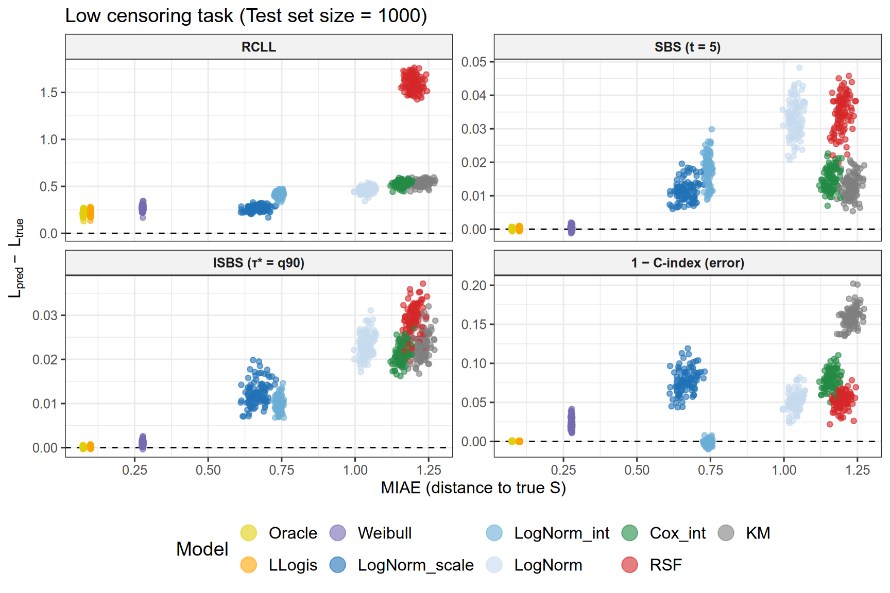
plot_score_diff(res, task_id_val = "high", meas = c("rcll", "sbs", "isbs", "cindex"),
n_test_val = 1000, legend_position = "bottom")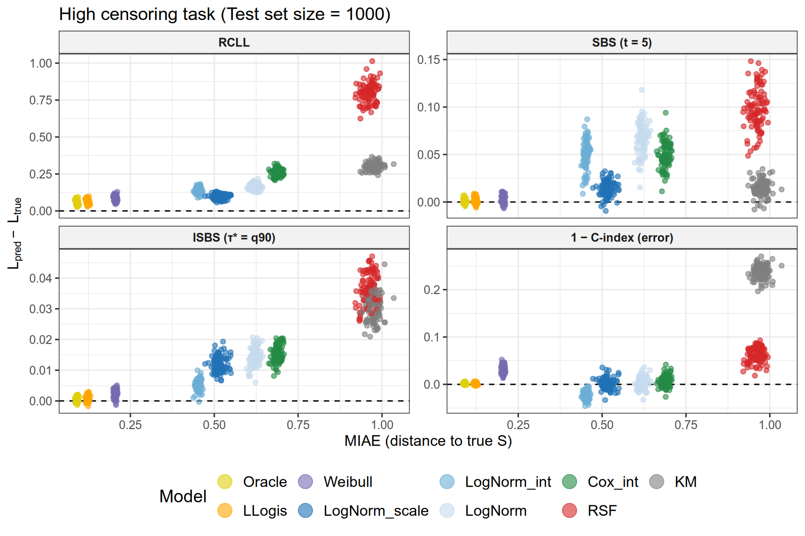
Performance of RCLL and ISBS as test set size decreases. Assesses how sample size affects discriminatory power and empirical properness. Relates to Figure 6 (low censoring task) and Figure C1 (high censoring task) in the paper.
Sensitivity of the RCLL to the density of the prediction time grid (subsampling from 2% to 100% of unique event times). Shows how coarse grids affect bias, variability, and model ranking (related to Figure 7 and Table C2 in the paper).
This benchmark complements the simulation study by comparing how different evaluation metrics assess and rank survival learners across eight heterogeneous, low-dimensional, real-world datasets.
To reproduce this benchmark, see real_data_benchmark.R.
All the datasets are available from mlr3proba as mlr3 tasks.
library(mlr3proba)
library(mlr3misc)
# silence mlr3 logging messages
lgr::get_logger("mlr3")$set_threshold(0)
res = readRDS("results/real_data_bm.rds")
task_ids = unique(res$task_id)
tasks = mlr3::tsks(task_ids)
metrics = c("C-index", "D-calib", "RCLL*", "RCLL", "ISBS")
res_long = melt(
res,
id.vars = c("task_id", "learner_id", "iteration"),
measure.vars = metrics,
variable.name = "metric",
value.name = "value"
)
# remove RCLL* from the boxplots
res_long = res_long[metric != "RCLL*"]
# truncate D-calibration to 50 to avoid extreme outliers in the boxplots
res_long[
metric == "D-calib",
value := pmin(value, 50)
]
# Reorder metric factor to the desired sequence
res_long[, metric := factor(metric, levels = metrics)]
task_info = lapply(tasks, function(task) {
id = task$id
n = task$nrow
p = task$n_features
feature_dt = task$col_info[id %nin% c("..row_id", task$target_names)]
n_factor = sum(feature_dt$type == "factor")
n_numeric = sum(feature_dt$type %in% c("numeric", "integer"))
cens_rate = task$cens_prop()
admin_cens_rate = task$admin_cens_prop()
prop_haz = ifelse(task$prop_haz() < 0.05, FALSE, TRUE)
list(
id = id,
n = n,
p = p,
n_factor = n_factor,
n_numeric = n_numeric,
censoring_rate = cens_rate,
admin_censoring_rate = admin_cens_rate,
prop_haz = prop_haz
)
}) |> rbindlist()In the following table:
survival::cox.zph() at the 5% significance level: TRUE indicates no evidence against proportional hazards (p \ge 0.05), whereas FALSE indicates a violation (p < 0.05).task_info |>
arrange(censoring_rate) |>
DT::datatable(
rownames = FALSE,
filter = "top",
options = list(dom = "t", searching = TRUE)
) |>
DT::formatRound(columns = c(6, 7), digits = 2) |>
DT::formatStyle(
columns = "censoring_rate",
backgroundColor = DT::styleInterval(
c(0.25, 0.5, 0.75),
c("#e5f5e0", "#a1d99b", "#e7785f", "#f8555b")
)
)We used the following models:
Model performance is evaluated using three survival scoring rules (RCLL, RCLL*, and ISBS), Harrell’s C-index (discrimination), and D-calibration (calibration). All models are assessed using 10 repetitions of 5-fold cross-validation without hyperparameter tuning.
Predictive performance can vary considerably across datasets due to differences in sample size, censoring proportion, covariate distributions and the suitability of the underlying model assumptions. To provide a detailed overview, the following figures show the distribution of each evaluation metric across all repeated cross-validation resamples, separately for each dataset. D-calibration is truncated at 50 to avoid extreme outliers in the boxplots. RCLL* is excluded from the boxplots as it is an experimental measure in this analysis and has not been used in practice. Datasets are ordered by increasing censoring rate, and the title of each panel includes the dataset identifier, sample size, number of features, and whether the proportional hazards assumption is satisfied. Within each dataset, learners are ordered by their median RCLL to facilitate comparison across the different evaluation metrics.
learner_ids = sort(unique(res_long$learner_id))
cols = scales::hue_pal()(length(learner_ids))
names(cols) = learner_idsplot_task = function(task) {
dat = res_long[task_id == task]
# Order learners by median RCLL
rcll_medians = dat[metric == "RCLL", .(med = median(value)), by = learner_id]
learner_order = rcll_medians[order(med), learner_id]
dat[, learner_id := factor(learner_id, levels = learner_order)]
p = dat |>
ggplot(aes(
x = value,
y = learner_id,
colour = learner_id,
fill = learner_id
)) +
geom_boxplot(alpha = 0.25, outlier.shape = NA) +
geom_jitter(width = 0, height = 0.15, alpha = 0.25, size = 0.7) +
facet_wrap(~metric, scales = "free_x", ncol = 2) +
# ---- Add the manual scales ----
scale_colour_manual(values = cols) +
scale_fill_manual(values = cols) +
labs(
x = NULL,
y = NULL,
title = task
) +
theme_bw(base_size = 14, base_family = "Arial") +
theme(
legend.position = "none",
# strip.background = element_blank(),
strip.background = element_rect(fill = "grey95"),
strip.text = element_text(face = "bold"),
panel.grid.major.y = element_blank(),
plot.title = element_text(face = "bold")
)
p
}
# order datasets by censoring rate
task_ids = task_info[order(censoring_rate)]$id
cat("::: {.panel-tabset}\n\n")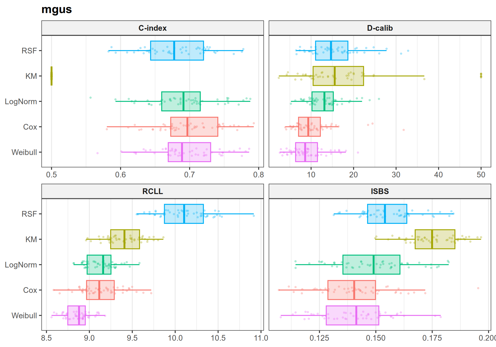
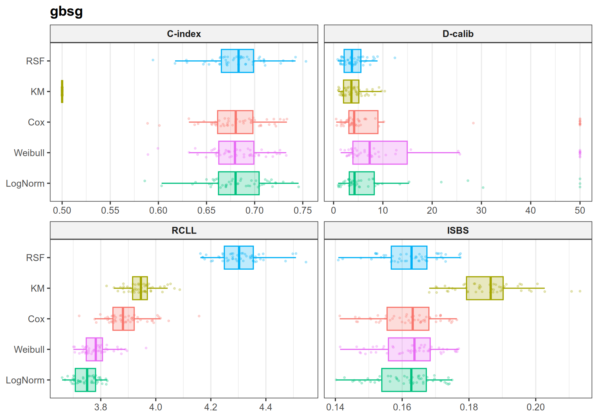
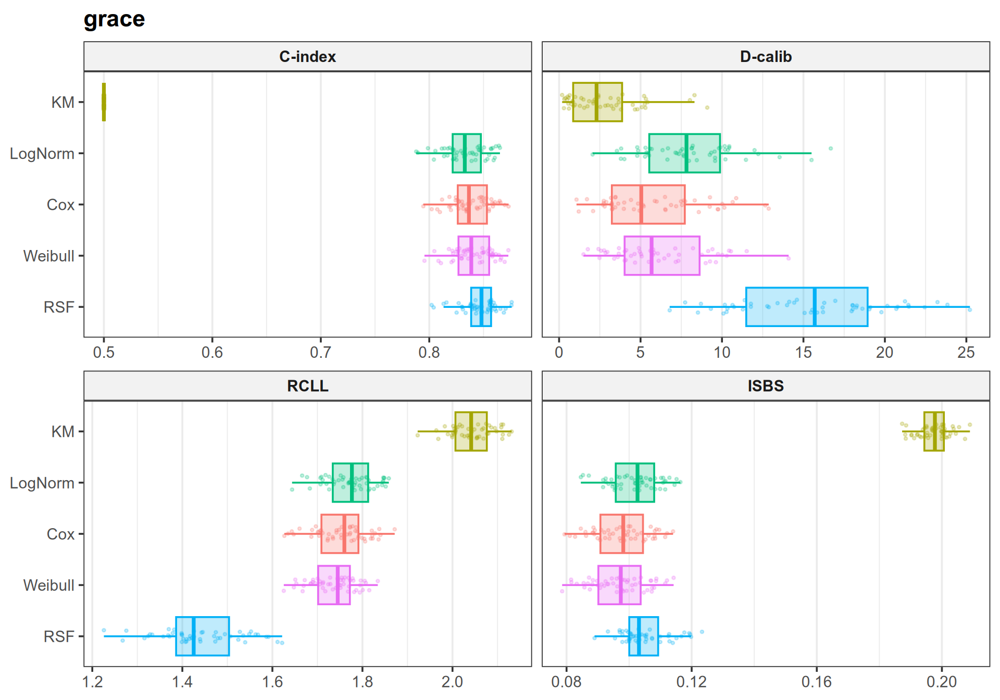
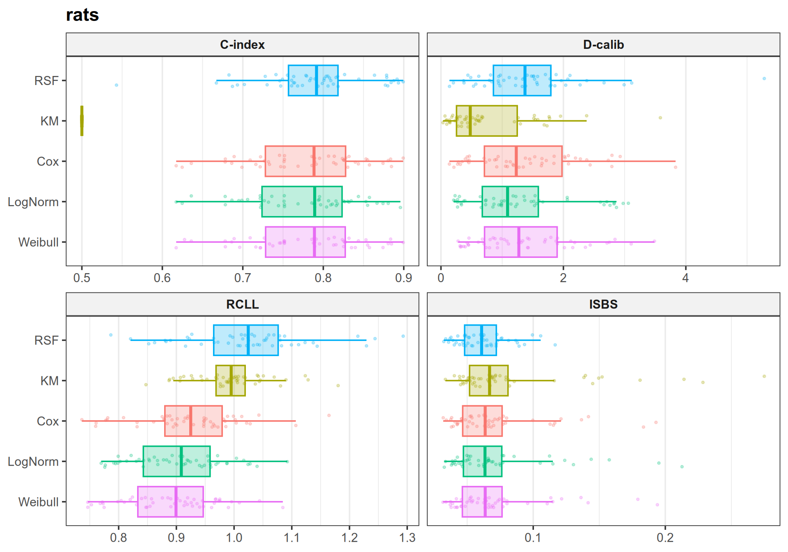
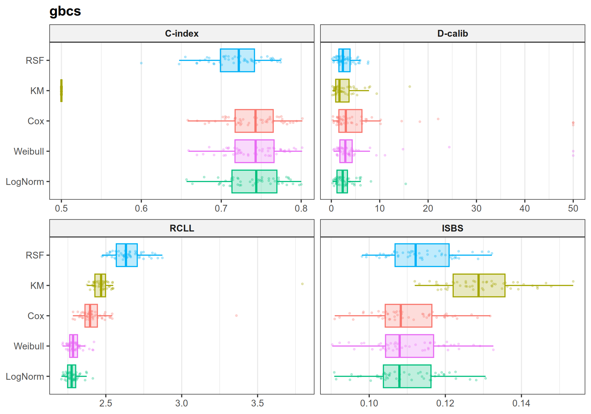
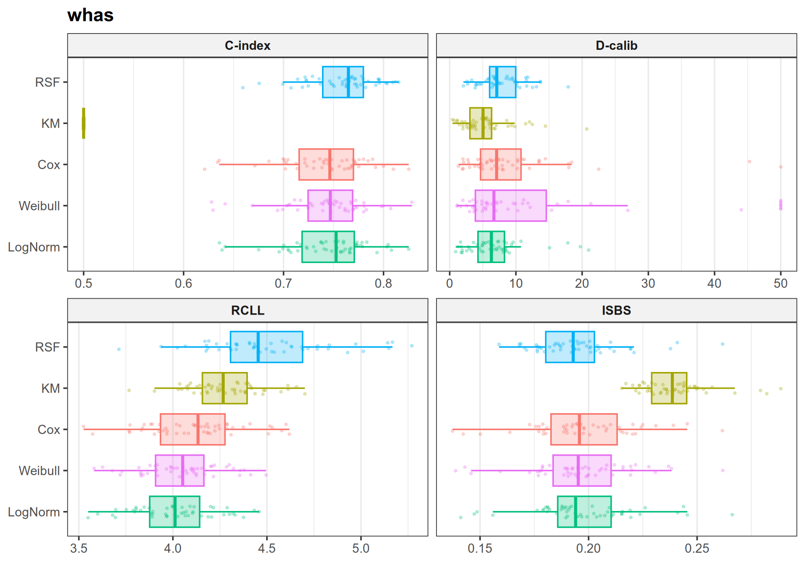
cat(":::\n")For easier numerical comparison, the table below reports the mean performance of every learner on each dataset, averaged over the repeated cross-validation resamples.
res_mean = res[,
lapply(.SD, mean, na.rm = TRUE), by = .(task_id, learner_id), .SDcols = metrics
]
res_mean |>
DT::datatable(
rownames = FALSE,
filter = "top",
options = list(searching = TRUE, pageLength = 10)
) |>
DT::formatRound(columns = c("RCLL", "RCLL*", "C-index", "ISBS"), digits = 3) |>
DT::formatSignif(columns = "D-calib", digits = 3)Since the evaluation metrics operate on different numerical scales and some (such as RCLL) are affected by dataset characteristics like censoring, we compare learners using within-dataset rankings rather than absolute scores. For every dataset and resampling iteration, model performances are converted into ranks (1 = best). Harrell’s C-index is converted to an error metric (1 - C-index) so that all metrics are oriented in the same direction (smaller values indicate better performance).
We compute Spearman rank correlations and visualize the empirical agreement between evaluation metrics as a correlation heatmap.
library(ggcorrplot)
# convert C-index to 1 - C
res = res[, `C-index-error` := 1 - `C-index`]
metrics = c("C-index-error", "D-calib", "RCLL*", "RCLL", "ISBS")
# Compute ranks per task for each metric
rank_cols = paste0("rank_", metrics)
res_ranks = copy(res)
# calculate ranks for each metric, grouped by task_id and iteration
for (i in seq_along(metrics)) {
m = metrics[i]
res_ranks[,
paste0("rank_", m) := frank(get(m), ties.method = "min"),
by = .(task_id, iteration)
]
}
cor_all = cor(res_ranks[, ..rank_cols], method = "pearson")
ggcorrplot(
cor_all,
method = "square",
type = "lower",
hc.order = TRUE,
lab = TRUE,
lab_size = 4,
outline.color = "white"
)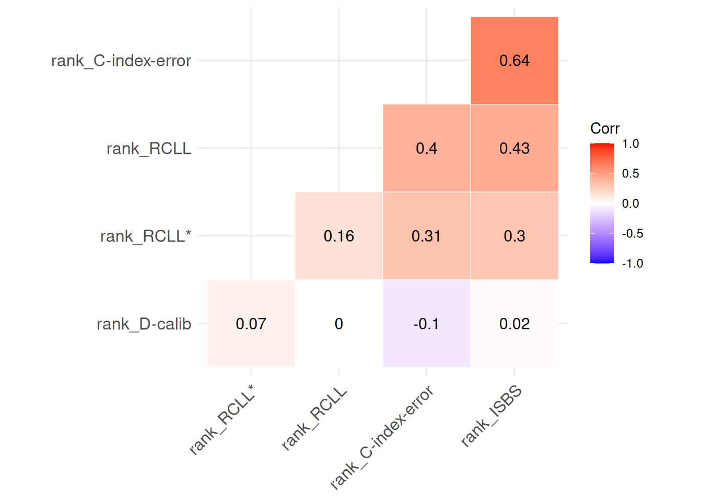
The real-world benchmark confirms that the choice of evaluation metric can substantially influence the ranking of survival learners.
RCLL provides the greatest discrimination between competing models. Across nearly all datasets, RCLL produces the clearest separation between learners. With ISBS, models are bit less distinguishable, and the C-index often fails to differentiate between models with noticeably different predictive distributions. ISBS shows moderate agreement with both RCLL (\rho = 0.43) and the C-index (\rho = 0.64).
RCLL values depends strongly on the censoring rate. As censoring increases, absolute RCLL values become smaller (and vice versa), making comparisons across datasets less meaningful. This behaviour follows directly from the RCLL definition: L_{RCLL} = - (\delta \log f(t) + (1 - \delta) \log S(t)). As the censoring rate increases, fewer observations contribute through the density term and more contribute through the survival term. Since the latter is typically associated with smaller loss values, the average RCLL decreases as censoring increases. Absolute RCLL scores are therefore most informative for comparing models within the same dataset (but ranks remain meaningful across datasets).
D-calibration captures complementary information. Its near-zero correlation with the remaining metrics indicates that calibration reflects a different aspect of predictive performance than discrimination or probabilistic accuracy.
Closely related scoring rules need not rank models similarly. Despite being a variant of RCLL, RCLL* exhibits only weak agreement with RCLL (\rho = 0.16), highlighting that seemingly similar evaluation metrics can induce substantially different learner rankings in practice.
Overall, these findings complement the simulation study by demonstrating that the empirical behaviour of survival evaluation metrics varies considerably on real datasets. Even metrics that are theoretically related—or theoretically proper—may emphasize different aspects of predictive performance and therefore lead to different conclusions about which model performs best.
utils::sessionInfo()R version 4.4.2 (2024-10-31)
Platform: x86_64-pc-linux-gnu
Running under: Ubuntu 24.04.4 LTS
Matrix products: default
BLAS: /usr/lib/x86_64-linux-gnu/blas/libblas.so.3.12.0
LAPACK: /usr/lib/x86_64-linux-gnu/lapack/liblapack.so.3.12.0
locale:
[1] LC_CTYPE=en_US.UTF-8 LC_NUMERIC=C
[3] LC_TIME=en_DK.UTF-8 LC_COLLATE=en_US.UTF-8
[5] LC_MONETARY=en_DK.UTF-8 LC_MESSAGES=en_US.UTF-8
[7] LC_PAPER=en_DK.UTF-8 LC_NAME=C
[9] LC_ADDRESS=C LC_TELEPHONE=C
[11] LC_MEASUREMENT=en_DK.UTF-8 LC_IDENTIFICATION=C
time zone: Europe/Oslo
tzcode source: system (glibc)
attached base packages:
[1] stats graphics grDevices utils datasets methods base
other attached packages:
[1] ggcorrplot_0.1.4.1 DT_0.33 data.table_1.18.4 tidyr_1.3.1
[5] purrr_1.0.2 akima_0.6-3.6 patchwork_1.3.2 ggplot2_4.0.2
[9] tibble_3.3.0 dplyr_1.1.4
loaded via a namespace (and not attached):
[1] gtable_0.3.6 xfun_0.57 bslib_0.10.0
[4] htmlwidgets_1.6.4 lattice_0.22-6 vctrs_0.7.1
[7] tools_4.4.2 crosstalk_1.2.1 generics_0.1.3
[10] parallel_4.4.2 pkgconfig_2.0.3 Matrix_1.7-1
[13] checkmate_2.3.4 RColorBrewer_1.1-3 S7_0.2.1
[16] mlr3pipelines_0.10.0 uuid_1.2-2 lifecycle_1.0.5
[19] stringr_1.6.0 compiler_4.4.2 farver_2.1.2
[22] set6_0.2.6 codetools_0.2-20 htmltools_0.5.9
[25] sass_0.4.10 yaml_2.3.12 pillar_1.11.0
[28] crayon_1.5.3 jquerylib_0.1.4 cachem_1.1.0
[31] parallelly_1.47.0 tidyselect_1.2.1 digest_0.6.39
[34] stringi_1.8.7 future_1.70.0 reshape2_1.4.4
[37] listenv_0.10.1 labeling_0.4.3 splines_4.4.2
[40] fastmap_1.2.0 grid_4.4.2 cli_3.6.6
[43] magrittr_2.0.4 paradox_1.0.1 survival_3.7-0
[46] withr_3.0.3 scales_1.4.0 backports_1.5.1
[49] sp_2.1-4 ooplah_0.2.0 rmarkdown_2.31
[52] globals_0.19.1 distr6_1.8.4 evaluate_1.0.5
[55] knitr_1.51 dictionar6_0.1.3 mlr3misc_0.22.0
[58] rlang_1.2.0 Rcpp_1.1.1 glue_1.8.0
[61] param6_0.2.4 palmerpenguins_0.1.1 mlr3proba_0.8.9
[64] jsonlite_2.0.0 plyr_1.8.9 lgr_0.5.2
[67] R6_2.6.1 mlr3_1.7.1